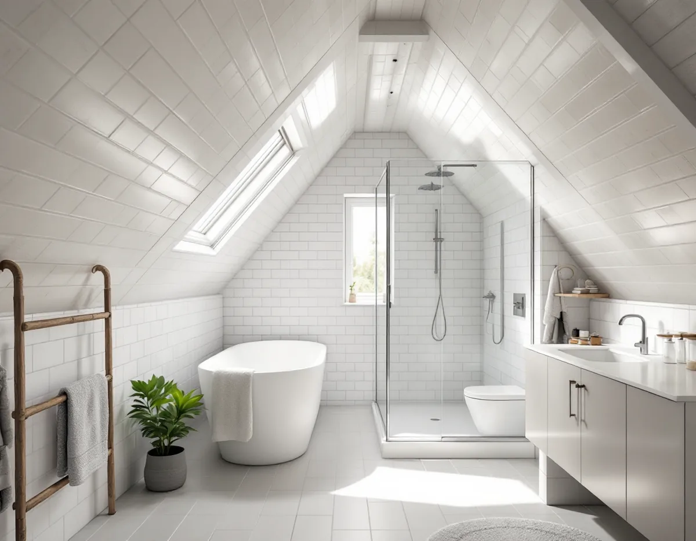
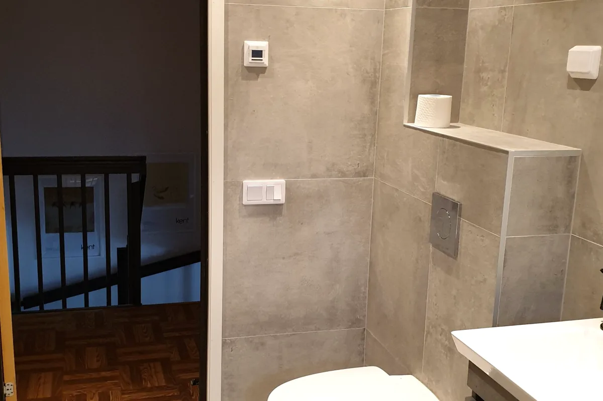

Besök i huset
Vi tittar på badrummet, bjälklaget där det går att se och var avlopp och frånluft går.
En badrumsrenovering i Bromma börjar med frågan vilket hus badrummet sitter i – en trävilla från trädgårdsstäderna, en småstuga i Ängby eller Olovslund eller en funkisvilla. Vi river ner till underlaget, bygger upp golv och väggar för ett tätskikt enligt branschreglerna och låter behöriga installatörer sköta VVS och el. ROT-avdraget drar vi direkt på fakturan.

I Alvik och Äppelviken, som staden köpte 1908, började villorna byggas på 1910-talet. På 1920-talet växte trädgårdsstäderna fram i Ålsten, Smedslätten, Nockeby, Höglandet och Ulvsunda, med trähus i ett och ett halvt plan under branta sadeltak. Badrummet i ett sådant hus har ofta flyttats eller byggts om under årens lopp och kan i dag ligga i källaren, i ett hörn av bottenvåningen eller under snedtaket på övervåningen. Var det ligger avgör hur golvet är byggt och hur avloppet går.
Småstugorna är en egen kategori. I Olovslund byggde familjerna själva sina hus, de flesta 1927–28, och i Norra Ängby uppfördes 1 200 småstugor 1931–38 av element som tillverkades i fabrik. Husen är små och planlösningen tät, och många har byggts till genom åren. Ett nytt eller större badrum hamnar därför ofta i skarven mellan den gamla stommen och en tillbyggnad.
Funkisvillorna i Södra Ängby, drygt 500 hus från 1934–39, och de 94 radhusen längs Ålstensgatan, som började byggas 1932, är ritade med genomtänkta och snåla planer. Där är det sällan läge att flytta badrummet; bättre att arbeta inom det befintliga rummet och lägga krutet på tätskikt, ventilation och nya ytskikt.

I trädgårdsstädernas trähus vilar badrumsgolvet på ett bjälklag av trä. Trä rör sig med fukt och belastning, och ett golv med klinker och ett tätskikt tål inte att svikta. Därför river vi ner till bjälkarna, kontrollerar dem och förstärker eller kompletterar där det behövs innan nytt golv byggs upp. Samtidigt byggs fallet mot golvbrunnen in i golvet, och det är lättare att få till rätt när underlaget är öppet.
Under snedtak blir rummet lågt längs ena väggen. Det påverkar var duschen kan stå och hur frånluften dras, och i en uppvärmd övervåning måste ventilationen fungera för att fukten inte ska gå vidare upp i takkonstruktionen. I källarbadrum är frågan i stället hur avloppet ligger i förhållande till husets servis och om golvet ligger mot mark.
Avloppsrör i äldre hus kan ha bytts helt, delvis eller inte alls. Vi går igenom vad som syns när golvet är rivet och föreslår åtgärder utifrån det, i stället för att gissa i förväg. Hur tätskikt, fall och brunn ska utföras beskrivs mer generellt under badrumsrenovering i Stockholm.
Stockholms stad skriver att det inte behövs bygglov för att flytta ett badrum. Däremot krävs anmälan och startbesked om arbetet ändrar bärande konstruktion eller brandskydd, om ventilationen installeras eller ändras väsentligt eller om det dras en ny VA-stam i ett nytt schakt. Det är vanligast när badrummet flyttas mellan våningar eller när ett nytt badrum byggs i en tillbyggnad.
Det som syns utifrån är en annan fråga. Norra och Södra Ängby, Ålstensgatan och Olovslund är riksintressen för kulturmiljövården, och enligt staden kan lov krävas där även för åtgärder som annars är lovfria. En ny fläkthuv på taket, ett galler i fasaden eller ett nytt badrumsfönster kan alltså behöva prövas. Utanför riksintressena ger Stadsmuseets kulturhistoriska klassificering en första bild av hur värdefullt huset bedöms vara.
Ska frånluften gå genom taket samordnar vi genomföringen med tätningen av taket. Mer om takets detaljer finns hos takläggare i Bromma.
Bor du i en bostadsrätt, till exempel i Alvik, Traneberg eller Abrahamsberg, gäller bostadsrättslagen. Enligt 7 kap. 7 § får du inte utan styrelsens tillstånd göra ingrepp i bärande konstruktion, installera eller ändra ledningar för avlopp, värme, gas eller vatten eller ändra ventilationen – precis det en badrumsrenovering brukar innehålla. Styrelsen får säga nej bara om åtgärden är till påtaglig skada eller olägenhet för föreningen, och den som är missnöjd kan begära att hyresnämnden prövar frågan.
I en villa eller ett eget radhus fattar du besluten själv, men du bär också hela ansvaret för att våtrummet blir tätt. Be om att få tätskiktets egenkontroll och monteringsanvisning när arbetet är klart och spara dem med husets handlingar. Ska badrummet ingå i en större ombyggnad av huset finns mer under villarenovering.
Vi tittar på badrummet, bjälklaget där det går att se och var avlopp och frånluft går.
Vi kontrollerar om huset ligger i ett riksintresse och om något ska ändras i fasad eller tak.
Du får ett förslag där rivning, underlag, tätskikt, VVS, el och ytskikt står var för sig.
Gamla ytskikt och golv tas bort, och vi bedömer stommen och rören innan något byggs upp igen.
Bjälklag förstärks vid behov, golvet byggs med fall och installatörerna drar rör och el.
Tätskikt, kakel och porslin monteras, och du får egenkontroll och skötselråd.
Rotavdraget är 30 procent av arbetskostnaden, högst 50 000 kronor per person och år, och tillsammans med rutavdrag högst 75 000 kronor. Skatteverket räknar bland annat rivning av väggar, plattsättning, att dra vatten och avlopp och att montera toalett, dusch och handfat som rotarbete i ett småhus. Material och resor ger inget avdrag. Vi drar avdraget direkt på fakturan.
I bostadsrätt gäller avdraget bara arbete inne i lägenheten. Stambyte, att flytta golvbrunnen eller att byta avloppsrör räknas där inte som rotarbete enligt Skatteverket.
Det som oftast avgör är vad som finns under det gamla golvet: hur mycket bjälklaget behöver förstärkas, om golvbrunn och avlopp kan ligga kvar och om rummet ska flyttas eller göras större. Därefter spelar storlek, val av kakel och klinker, golvvärme och nya fönster eller genomföringar in. Platsbesöket är gratis och du får ett skriftligt kostnadsförslag innan något beställs.
Tätskikt, golvbrunn, el, VVS och intyg.
Badrumsrenovering i Stockholm →Takbyte, takbesiktning och plåtarbeten.
Takläggare i Bromma →Trädgårdsstäder, tegel och funkistak.
Takrenovering i Bromma →Trädgårdsstad, karta och 30 m² inom plan.
Attefallshus i Bromma →Vind, bärande väggar och en andra bostad.
Byggföretag i Bromma →Kulörval och färgtyp i trädgårdsstaden.
Fasadmålning i Bromma →Småspröjs, småstugor och funkis i Bromma.
Fönsterbyte i Bromma →Småstugornas fönster, kitt och linoljefärg.
Fönsterrenovering i Bromma →Slipa furugolvet och behandla med lut och såpa.
Golvslipning i Bromma →Kupor, låga tak och bleck i Bromma.
Plåtslagare i Bromma →Lertegel, småstugor och solceller i Bromma.
Takbyte i Bromma →Spara och ersätta gamla tapeter.
Tapetsering i Bromma →Småstugor, trädgårdsstad och prickmark.
Tillbyggnad i Bromma →